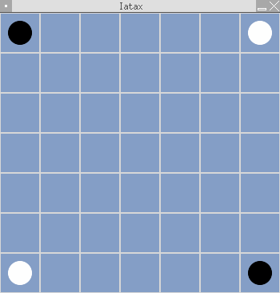
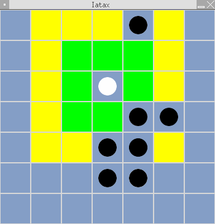
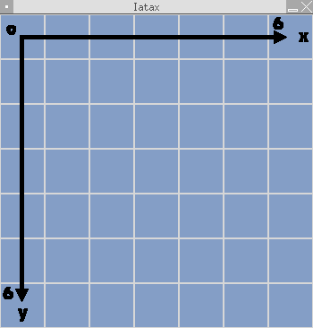

AN ATAXX GAME FOR A.I.s
Copyright (C) 2004-2005 Pierre 'AlSim' CHAPUIS (alsim@users.sf.net)
Permission is granted to copy, distribute and/or modify this document under the terms of the GNU Free Documentation License, Version 1.2 or any later version published by the Free Software Foundation ; with no Invariant Sections, no Front-Cover Texts, and no Back-Cover Texts.
You should have recieved a copy of the GNU Free Documentation License along with that file. If not, write to AlSim.
I) Questions and answers
What is Iatax ?
Iatax (with one single 't') is a game based on Ataxx rules (which you might know because of its famous Gnome port called Gataxx). The difference is that in Iatax, the 'players' are bots developped by you in Perl language, a bit like in CoreWars.
Is there a website for Iatax ? An E-mail ?
Yes ! The Iatax project has the chance to be hosted at SourceForge.net. Its homepage is www.iatax.sf.net. If you want to em@il its author for any reason, you can write to alsim@users.sf.net.
Am I allowed to use, redistribute, modify ... Iatax ?
Yes. Iatax is free-as-in-freedom software, realeased under the GPL license. You should have found a copy along with the software if you downloaded it, otherwise, write to AlSim. This license allows you to do a lot of things with the software, as long as you keep it bundled with a copy of the GPL.
What if I want to join the developpement team ?
The 'developpement team' is for now composed of one single person, AlSim, but you are of course welcome ! If you can draw, code, translate ..., we want you in the 'team' ! Mail AlSim and enter the wonderful world of Iatax from the inside ! Anyway, using Iatax is a bit developping Iatax if you send your bots, bug reports, ...
II) Using Iatax
- 1. Requirements -
Iatax is written in Perl and can run on any Perl-able system. You must also have SDL and SDL-Perl set up if you want to use the front-end.
- 2. Setup -
Iatax needs no setup. You only have to download the last version, untar it (tar -xzvf iatax-*.tar.gz), enter the newly created folder and launch iatax.pl.
- 3. Command line options -
--help : Displays a help about the command line options
--iiaB bot_name or bot_file.iax.bot : Sets black A.I. (default : Human)
--iiaW bot_name or bot_file.iax.bot : Sets white A.I. (default : Human)
--logfile any_log_file.iax.log : Allows the user to choose the logfile (default : gamelog.iax.log in Iatax's folder).
--nolog : Iatax won't generate a log file. This is NOT recommanded : analysing a game with LogReader is only possible if a logfile has been generated.
--readlog any_log_file.iax.log : Runs the LogReader log analyser module on the given logfile (default : gamelog.iax.log in Iatax's folder).
--lang XX, where XX is a language code (ex. : FR, EN ...) : Sets the language used by Iatax. You must have previously downloaded and set up the corresponding language file (lang_XX.iax.lng ; read further to know how to do). Default is English.
--nb X, where X is a number : Iatax will play X consecutive games between the two different bots, the winner of the match is the one which wins most of them. Draw is possible if X is even. BEWARE : don't set X too large if you don't want your match to last a long time ...
--ig : Iatax will run in front-end mode. You need SDL to use this.
--theme theme_name : choose the theme used by the front-end (default : basic).
- 4. Customising Iatax -
You can do different things to improve your Iatax :
* Setup new language kits : download them, then copy the files in the "lang" folder.
* Add more graphic themes for the front-end : download them, then untar the archives in the "themes" folder.
* Add new bots : download them, then copy the files in the "bots" folder.
- 5. Human -
Human is a special .iax.bot file which allows you to play against you bots (to test/debug/... them). Of course, if you set both black and white A.I.s as Human, you will be able to use Iatax as a 'normal' Ataxx game, even if it's not its original aim.
If you launch Human in text mode, you will be prompted for your name, then at each turn for the X and Y of the piece you want to play and of your aim. At any time, you can answer 'w' to withdraw, 's' to skip a turn ( note that it will work only if you can do nothing else) or 'g' to see the current state of the Grid. In front-end mode, the use of Human is standard and you should have no problem (use Tab to skip the turn) ...
- 6. BASIX -
BASIX is a bot included in Iatax for testing purpose. You can use it like any bot by setting '--iiaX basix'. It can also be used as an example of how a bot can be written.
III) Ataxx rules
Ataxx rules are easy to understand, but the game itself is far from easy to master. The goal is to have more pieces than your opponent when the game ends, which occurs when one of the two players have no more pieces or when the board (called the Grid in Iatax) is full. In Iatax, the game can also end on a 'SegFault' (a bot tries to do something it is not allowed to) or when one of the players withdraws.
The Grid is a 7x7 table. At the beginning of the game, each player has two coin in opposite corners of the table, as shown on this snapshot.

Black player moves first. There are two kinds of moves allowed : the 'copy' and the 'move'. The copy consists in adding a piece in one of the squares close to another one of your pieces. The move consists in moving one of your pieces on the board to another square close to one of those where you would've been able to copy. No obstacle can block a move, but you can not put one of your coins on an occupied square. On this snapshot, the white player can copy on the green squares and move on the yellow ones.

When you move or copy a piece on a square adjacent to one or more of your opponent's pieces, they become yours. That's the goal of the game : stealing your opponent's pieces.
If you haven't set the '--nb' option, the winner of the first game wins the match, otherwise, the winner is the one which wins most of the matches.
IV) Making your own bot(s)
Now you know how Iatax works, and want to begin coding your own bot. Good idea ! To begin, you need a text editor. It is much better if it supports Perl syntaxic coloration (most of the famous editors such as Vi, Emacs, Kate, Gedit, Jext for Windows users ... do that). I recommand using an X editor when running a Linux/BSD. This will probably hurt the purists, but coding a bot in text mode is not a good solution, because you need anyway to have an X server running for testing purpose. If you really want to use your favourite text editor, use GVim or XEmacs, or launch it in a terminal.
I said the bots had to be written in Perl. Here's an example of the syntax :
# Name_of_the_bot by Author
# Short description
$Name = 'Name' ;
$IsHuman = 0 ;
sub Play
{
you_code_here
return (xSource, ySource, xAim, yAim)
}
Of course, you can also define other subs than Play, but that's the one that will be called by Iatax with one single argument (which can be known by a shift), 1 if the bot plays Blacks, 2 if the bot plays Whites. Your bot is allowed to read @main::grid to know the state of the game, but it mustn't, of course, modify it (or it will cause a SegFault). It must return, as shown in the example, a table of 4 elements representing the move played. In this table, remember that the Grid is made in this way :

If your bot can do nothing else, then it is allowed to skip its turn. To skip a turn, return -1 instead of the table representing your move. But beware : if your bot could have played, it will cause a SegFault (Ataxx rules forbid to skip one's turn unless it is necessary) ! If you don't want to care about that yourself, simply add the following lines at the beginning of your code and it'll work fine :
my $type = shift ;
(&main::VerSkip($type)) && return -1 ;
When you're done with the code, save your file in the 'bots' folder with the .iax.bot suffix and launch Iatax with '--IIAB your_bot' or with '--IIAW your_bot'.
Now, I think you know enough to begin coding your first Iatax bot. Have fun !
V) The LogReader module
When you'll have your bot created, maybe it will work, and maybe not ... Let's say probaly not ! And you'll want to see what has went wrong, in order to debug it. That's the aim of the LogReader module. LogReader is called with '--readlog my_log_file.iax.log'. If you've already opened a .iax.log file (if not, do it now !), you've seen that all the moves are recorded in a legible way, so that you could, if you had a checker and pieces (it's quite mandatory to buy an othello if you become an Ataxx fan), replay the whole game.
LogReader can do the work for you ! At first, you have to enter the number of the game (starting from one) you want to study (if you didn't use '--nb', answer '1'). In text mode, you must first enter the number of the game (starting from one) you want to study (if you didn't use '--nb', answer '1'), then type '+/-' to go to next/previous turn. As '+' is default, you'll also go to next turn if you press enter without typing anything. If you enter a turn number, you'll automatically jump to this turn. Say 'q' to quit. With the front-end, it's even easier : use your keyboard's arrows to navigate between the levels (Right : next ; Left : previous ; PageUp : first ; PageDown : last) and games (Down : next ; Up : previous), and press Escape to exit !
LogReader also includes since v0.3 a mean to replay a game from a given turn. To use it, type 'r' in test mode or press enter with the front-end. It can be used for various reasons. Note that you can replay a game played by other bots than the ones you are using (it's useful to compare their reactions to a special case).
You'll see, this tool is really useful. I used it to find that ... bug in v0.2DBE that made that Human didn't work in front-end mode, I think it would have taken me at least twice the time without it.
Of course, you can also use LogReader to analyse the games your bot has lost in order to prevent this next time ...
VI) And now ?
Now that you know everything, stop reading that boring documentation and play Iatax ;) Have fun !